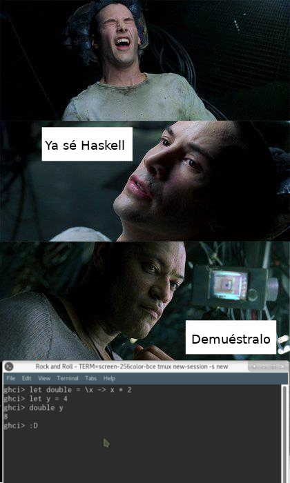

GHCi - Parte 1
Posted on September 2, 2017
Nota:
Esta es una serie de tutoriales dedicados a explorar el interprete de Glasgow Haskell Compiler o GHC. Bueno, ¿y por qué no empezar con algo básico de Haskell? Principalmente, porque ya conozco lo básico del lenguaje y porque estoy seguro que pueden encontrar esa información fácilmente buscándola en google. Por ejemplo, aprende haskell por el bien de todos, puedes revisar los blog posts de Silly Bytes, y también puedes encontrar varios tutoriales en YouTube. Y eso solo en Español, en Inglés puedes miles de recursos. Si deseas aprender, ¿qué esperas? ¿qué inventen algo como en Matrix?

Imagen 1. Neo Aprende Haskell